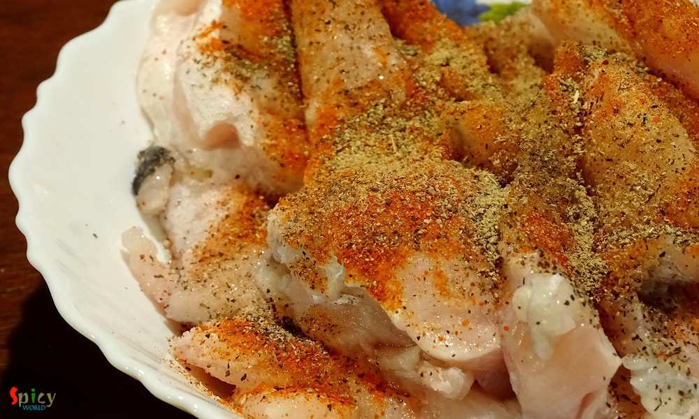
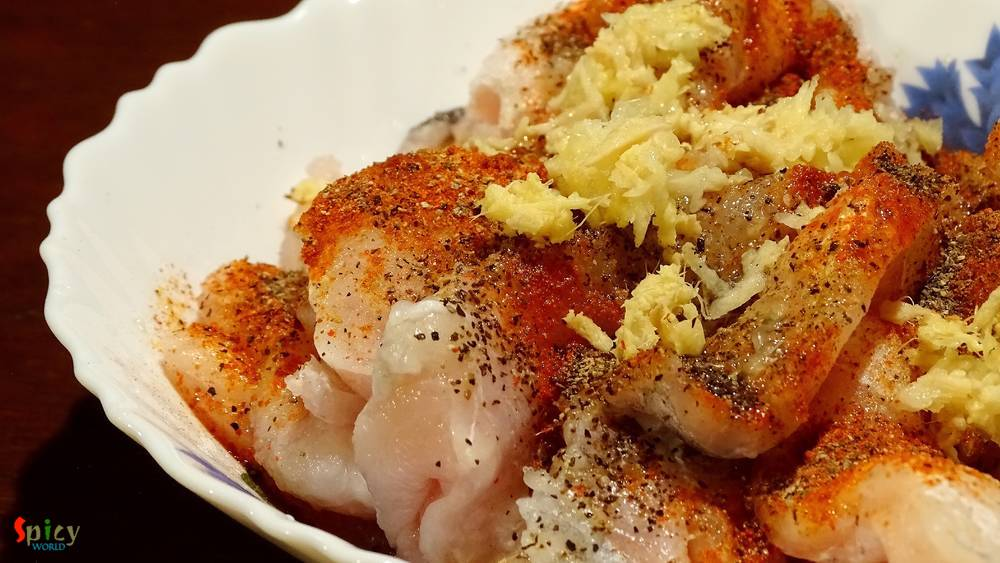
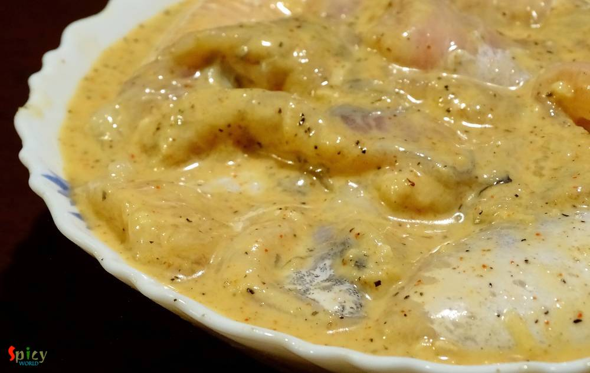
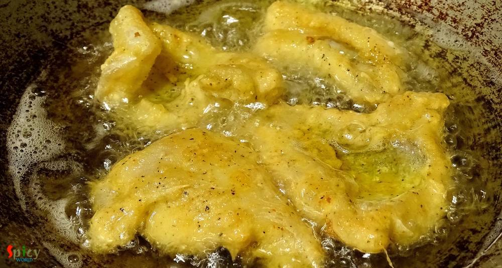

Simple and Easy Recipes
Fish Pakora / Deep fried Fish Nuggets
© 2016 Spicy World, Published on: Apr 12, 2016
I always find immense pleasure in cooking deep fried dishes, I know they are not always healthy to eat, but then, who is watching ? I made this 'fish pokora' last month and simply forgot to post. It is close to 'amritsari fish fry' but I didn't use lots of spices, that's why they are just 'fish pakora'. You can enjoy this with chilli sauce / chutney / coke / beer. Everytime they will taste scrumptious. I have already posted ' chicken pakora' recipe but these fish nuggets take very less time to prep and cook. Try this easy recipe in your kitchen and enjoy with your family.

Ingredients
- 15-20 chunck size boneless fish pieces. (Vetki / Tilapia / Catfish, / Barramundi)
- 1 egg.
- 1/4th cup of cornflour.
- 1 and half Teaspoon of black pepper powder.
- 1 Teaspoon of red chilli powder.
- Salt.
- 2 Teaspoons of lemon juice.
- 1 Teaspoon of ginger and garlic paste.
- Lots of white oil.
- 1/4th cup of rice flour.
- Big pinch of chaat masala.


Steps
Put the fish pieces in a mixing bowl.
Add salt, black pepper powder and red chilli powder to the fish.
Then add lemon juice, ginger and garlic paste to the fish. Mix well.
Add the egg, rice flour and cornflour. Mix very well with the fish and keep it for 10 minutes.
After that heat oil in a pan / kadai. Put few spoons of hot oil in the batter and mix well.
Fry the battered fish pieces in hot oil one by one for 5 minutes.
Do not overcrowd the pan.
Then remove them from the oil and keep on a paper tissue to absorb excess oil.
Sprinkle some chaat masala all over them.
Your fish pakora is ready.
Serve this hot with some onion and chilli sauce.
")